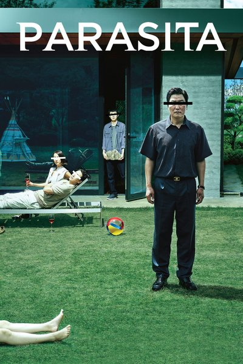

Parasita
A família Kim vive em um porão apertado e sobrevive de bicos. Quando o filho consegue um emprego como tutor na casa de uma família rica, todos passam a ocupar, um a um, os espaços da mansão. Uma sátira afiada sobre desigualdade que vira thriller.
- Suspense
- Drama
- Comédia negra